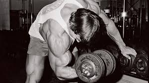

Cardio son las ejercitaciones en las que se pone en movimiento los músculos mayores del cuerpo durante un período prolongado, ayudando a quemar grasa y perder calorías.
Musculación se resume a ingerir más calorías de lo habitual para aumentar la masa de tus músculos, pero sin aumentar el índice de grasa corporal.
Definición significa reducción de la grasa corporal. Debes entender que en tu cuerpo están teniendo lugar procesos de aumento y reparación de la musculatura constantemente, especialmente durante las fases de sueño y descanso
Crossfit un ejercicio que gracias a que ofrece resultados rápidos, quema grasa y trabaja todos los músculos de nuestro cuerpo puede ofrecer una figura mucho más estilizada en poco tiempo.